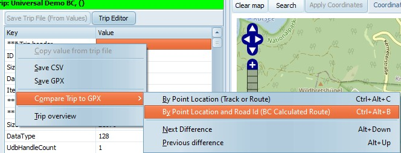
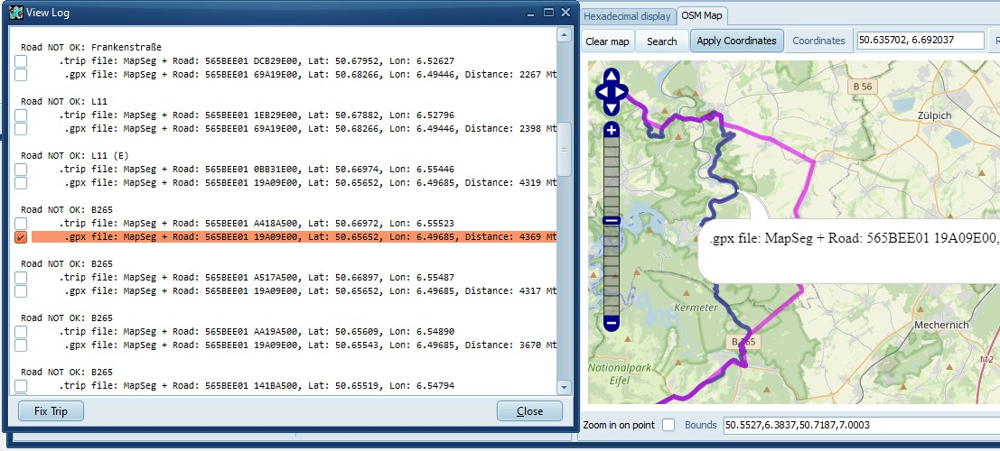
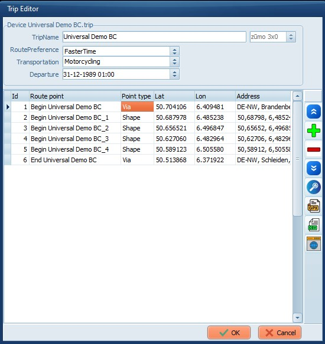
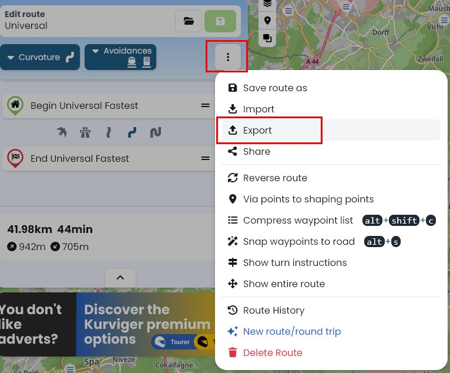
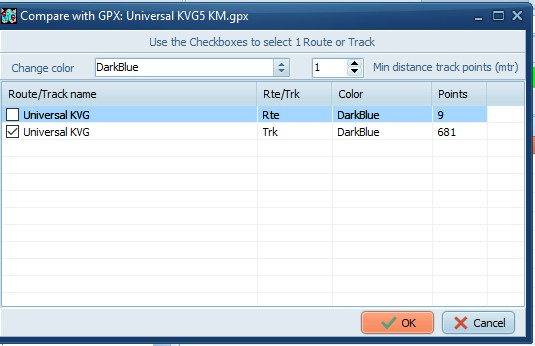
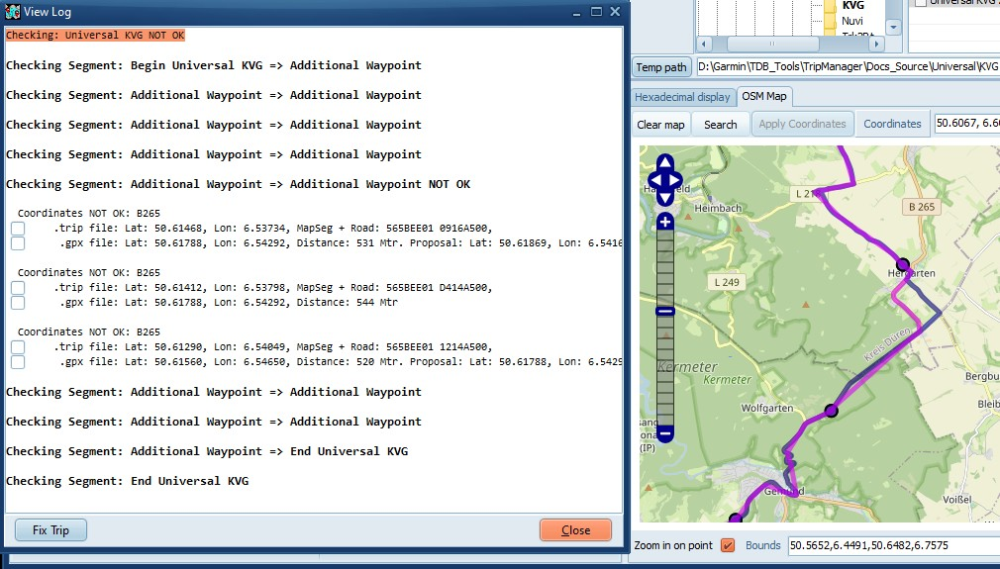
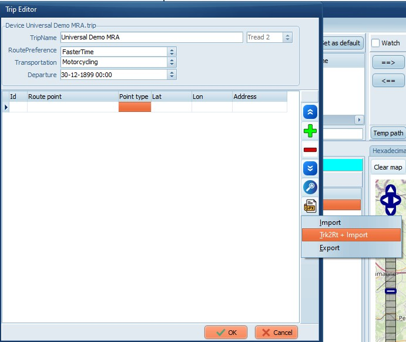
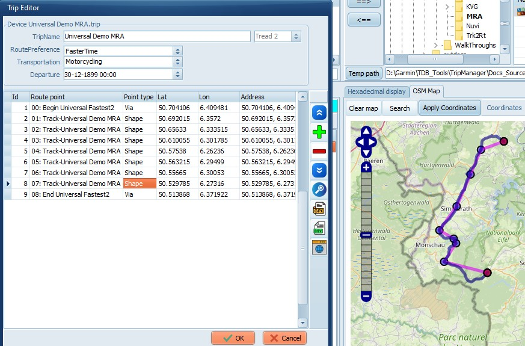

One of the things Trk2RT can do is enhance a route by adding additional
shaping points. It can even create a route from a track(log).
It uses GPX, or KML , files as input, typically created by BaseCamp,
MyrouteApp, Kurviger, or Google Maps.
If installed using the TripManager installer Trk2Rt is added to context
menu of GPX and KML files in Windows Explorer and TripManager.
Using the context menu you can easily 'Create a route from a track', or
'open' the file in the TrkT2Rt dialog, to have all options available.
Trk2Rt is also available in the Trip Editor via the speed button Gpx/Trk2RT + import.
So, It is a valuable tool to add additional shaping points, resulting in a
device route that matches the planned route better.
3) Kurviger route planner
Kurviger is a complete route planning tool, targeted at motorcycle usage.
TripManager V1.7 has added options to open a GPX, or Trip, file directly
in Kurviger. The file can be on a device, or a Windows folder. This option
can help in quickly checking a route. Very helpful are the warnings that
Kurviger can give about misplaced route points.
In Advanced/Settings a Tab has been added called Kurviger where you
can set up the defaults to use for the Kurviger website.
One of its unique features, that can help in creating a universal route, is
the option to add additional shaping points to the exported GPX. There is
even an intelligent option, but that is not available in the free version.
So, In addition to being a good route planning tool, it can help you add
additional shaping points, resulting in a device route that matches the
planned route better.
Note: Kurviger uses the term Waypoint for Route points. This can be
confusing.
Example usage
1) Using BaseCamp and Compare+Fix
· Create a small route in BaseCamp and export the calculated route
to
GPX.
· In TripManager use Send to, and use Force recalculation.
See 6) Send
to device. Method 5. · Recalculate on the unit, reboot again in FileTransfer mode.
· In TripManager. Select the trip file. Use the Compare+Fix method.
See screenshots:
|

Right click in the Trip Info tab.
You can use Ctrl+Alt+B for comparing BaseCamp GPX files, or CTRL+Alt+C for comparing with a GPX containing a track.
|
|
Select the route/track in the GPX to compare with.
|
|

In the Log window the difference lines are prefixed with a checkbox. To manually create an additional shaping point, check the corresponding line.
Note that you can also check the lines from the trip file, in case you prefer the Zumo alternative.
All checked lines will become additional shaping points when you 'Open fixed trip', or 'Save fixed GPX'.
|
|
When you select a Segment Line, or the First line, You can use Prefer GPX. TripManager will automatically check lines that you can use as a proposal.
To control how many shaping points are added use the General setting MinShapeDist.
|
|
Open fixed trip will open the Trip Editor with the added shaping points.
Save fixed GPX will create a new GPX file.
|
|

Here you can:
· Export to a GPX, or CSV
· Open in Kurviger.
OK. Will save the trip file
Cancel. To abort the changes
|
In Kurviger you have the option to create additional shaping points when
exporting. Once the GPX is exported the method for comparing is
analogous to the previous example.
|

Click on the 3 dots, and select Export
|
|
I recommend using File format GPX (*.gpx) and selecting both Route and Track.
Your preferred interval should be experimentally determined.
Personal Note: Using 'Navigation device'/'Garmin/Zumo XT' adds a lot of lines to the GPX. TripManager does
not use them. Importing on the XT takes a lot longer.
The intented advantage is a route that resembles the plan better, but in the event of recalculation they are all
discarded, and the result will be different. As such it has no advantage over a Trip from a Track.
|
The Compare+Fix is essentially the same, only now you need to use Ctrl+Alt+C and select the Trk line.
|

|
|

Because of the added shaping points the difference is only minimal. In real life I would not bother making changes to the Route.
|
Export a route in MRA using GPX 1.1 (Route + Track + POI)
For the purpose of this demonstration I'm now using the Trip Editor, but
the exported GPX can also be used in the Send To method.
|
Use Trip Editor/New trip (MTP device) to create a new empty trip.
|
|
Type a name
|
|

In the blank trip Click on Trk2Rt + Import
|
|
Open the GPX exported from MRA.
Check both the Rte and the Trk line, for best results.
Change the exportPercent (Given in per mille) to control how many Route points the new trip should have. (In the
screenshot 10 corresponds with 9 Route points)
|
|

Note that MRA calculated the western variant.
|